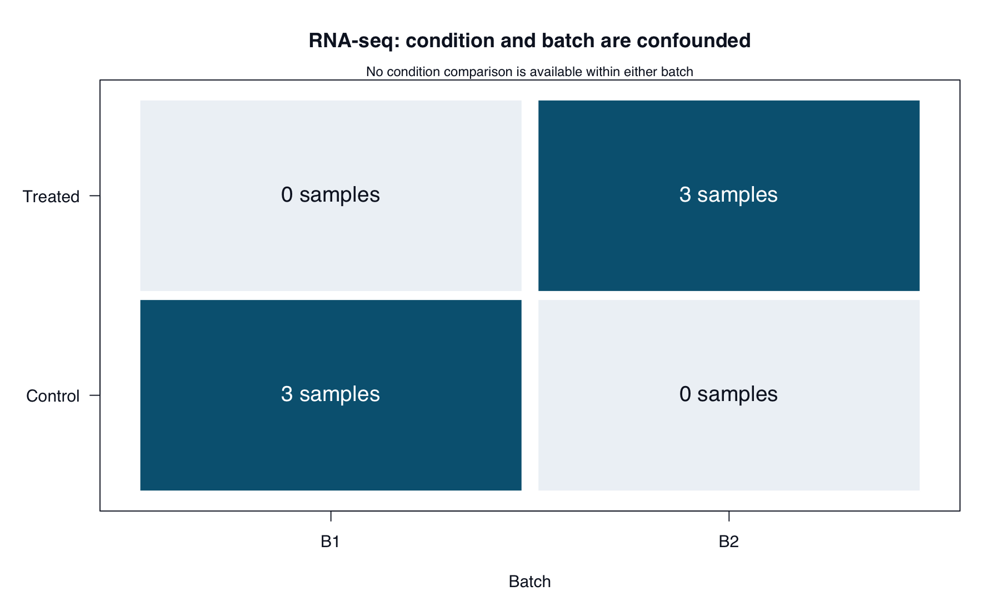

RNA-seq: design, results, and interpretation
The evaluation question
Can the supplied evidence establish a treatment effect independently of batch?
This case asks you to distinguish a study-design problem from errors in interpreting a results table. Apply the ABE-002 framework with less prompting than in the microbiome case.
Outcome: produce a review that separates estimable comparisons, correct arithmetic, and unsupported biological conclusions.
Inspect the case
Read cases/rnaseq/README.md and cases/rnaseq/simulated-response.md. Two evidence components are supplied:
| Component | Contents | What it can establish |
|---|---|---|
data/sample-metadata.tsv |
Six distinct biological samples: three controls in batch B1 and three treated samples in B2 | Replication and overlap between batch and condition |
data/illustrative-results.tsv |
Six invented gene IDs, log2 fold changes, and p-values | Arithmetic and interpretation checks only |
Paths in this table are relative to cases/rnaseq/.
The results table was not generated from these samples or by DESeq2. No count matrix is supplied. Do not infer that the reported numbers validate the intended model, ~ batch + condition.
For the arithmetic exercise, the six rows are the complete testing family. There are no missing p-values or excluded hypotheses. The specified decision rule is Benjamini–Hochberg (BH) adjusted p-value < 0.05.
Plan your checks
Create results/ch05/evidence-log.tsv, using the fields from ABE-002. Before running code, identify evidence for each of the seven claims in the simulated response.
Your review should address:
- Whether batch and condition can be separated in this design.
- Whether changing the formula resolves the scientific limitation.
- Which rows satisfy the raw and adjusted p-value rules.
- What positive and negative log2 fold changes mean.
- Whether any supplied number supports a biological treatment claim.
Preserve supported statements and separate mixed claims into individual findings.
Run targeted verification
From the repository root:
Rscript scripts/R/05-verify-rnaseq.RAlternatively, from an R session with the repository root as its working directory:
source("scripts/R/05-verify-rnaseq.R")The script requires base R only. It constructs the design matrix, checks its rank, calculates BH-adjusted values with p.adjust(), and converts log2 fold changes with 2^log2FoldChange. It does not fit a differential-expression model.
Output under results/ch05/ |
Use |
|---|---|
batch-condition-table.tsv |
Inspect overlap between conditions and batches. |
design-matrix.tsv, design-check.tsv |
Inspect the model columns and rank. |
result-checks.tsv |
Inspect adjusted values, threshold decisions, and fold changes. |
input-checksums.tsv, session-info.txt |
Record input fingerprints and software details. |
Outputs are overwritten on rerun. Preserve earlier runs before changing inputs. A completed script can report a failed design check: completion is not approval of the analysis.
The reference tables in cases/rnaseq/reference/ were calculated independently with Python. The R script has not been executed in the authoring environment. Compare your observed results with the references; do not report expected values as an execution you performed.
Interpret the design before the claims
A full-rank design matrix is required to estimate its coefficients separately. Here, the treated-condition indicator and batch-B2 indicator are identical. Adding both terms cannot distinguish their effects. Dropping batch does not make the condition comparison unconfounded. The DESeq2 documentation explains this under “Model matrix not full rank.”
For the separate arithmetic task, check all six p-values together. A correct multiple-testing calculation cannot repair an unsuitable design or establish the provenance of invented results.
The design has six rows, three columns, and rank two. Separate batch and condition effects are not estimable.
Four raw p-values are below 0.05. The BH-adjusted values are 0.006, 0.03, 0.06, 0.06, 0.24, and 0.8; only G1 and G2 meet the adjusted threshold.
A log2 fold change of 1 corresponds to a ratio of 2. A value of -1 corresponds to 0.5, not negative expression.
These statements establish design properties and arithmetic only. Compare your complete review with cases/rnaseq/worked-review.md after finishing your first attempt.
Deliverable and checkpoint
Write results/ch05/evaluation-report.md, linking your evidence log and outputs. Include a corrected conclusion and a precise request for the evidence or design changes needed before making treatment-specific claims.
Your report should distinguish a calculation error, a design limitation, and a missing-evidence problem. Explain why a small adjusted p-value cannot resolve the latter two.
Read the visual evidence

The empty cells show the missing within-batch comparisons.
Run from the repository root:
Rscript scripts/R/plot-evaluation-cases.RView or download the base-R plotting code. It reads the supplied case data and regenerates all five figures in results/figures/. Existing images are overwritten; book rendering does not run this script.
The bundled PNGs were generated with the Python plotting code. The R alternative uses the same inputs and calculations but has not been executed in the authoring environment. Layout may differ slightly.
Continue to the Single-Cell Case for more independent evaluation.